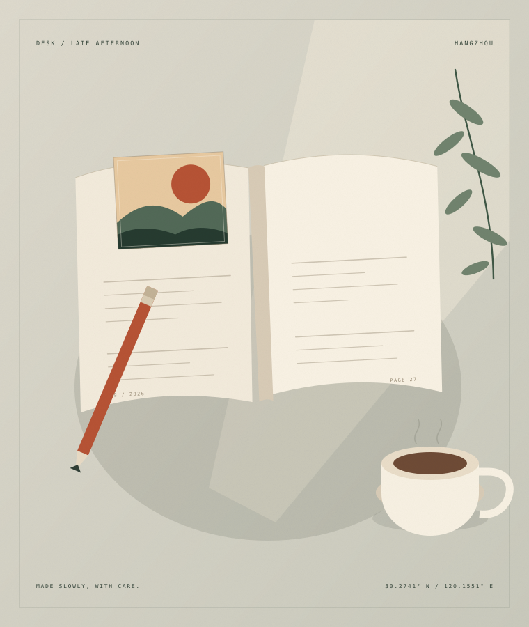

先让它真实，再让它漂亮。
无论是一段文字、一个页面，还是一个人的生活，真实总是比精致更难，也更值得。先问它是否诚实，再考虑它好不好看。
ABOUT / 关于我
你好，我是 Waveadwake。白天做设计、写前端代码，晚上读书、散步，偶尔把一些想不清楚的事情写成文章。
我是 Waveadwake，一名独立设计师和前端开发者，目前住在杭州。我的工作大多和屏幕有关：画界面、搭页面、调整一段文字的间距，让一件事情看起来更清楚一点。
我喜欢设计，因为它要求我在意别人的感受；我也喜欢代码，因为它诚实地告诉我哪里出了错。两者看起来不同，做的其实是同一件事：把复杂的东西，整理成别人可以理解的样子。
工作之外，我读书，走路，做一些没有用的小东西。我会为了一个标题在屋里走来走去，也会因为路边一棵树的影子停下来。这个博客记录的，就是这些不那么重要、但我舍不得忘记的时刻。
“Rebeldom” 开始于 2022 年。中间停过一段时间，后来又把文章一篇篇搬了回来。它没有明确的主题，也不打算教会谁什么。如果一定要说，它更像一本公开的练习册：练习观察，练习诚实，练习把一件事完整地说完。

01 / NOW
这是一份会过期的清单。它不展示全部生活，只说明最近的我，把时间花在了哪里。
最后更新 / 2026.10.20
02 / PRINCIPLES
无论是一段文字、一个页面，还是一个人的生活，真实总是比精致更难，也更值得。先问它是否诚实，再考虑它好不好看。
十分钟的专注，好过三小时的心不在焉。我试着一次只做一件事，允许自己在喜欢的事情上慢一点。
散步、发呆、读一本和手头工作无关的书。它们不直接创造价值，却让我重新有能力感受价值。
03 / SAY HELLO
欢迎来信，聊聊设计、文字、一本喜欢的书，或者你所在城市的一条散步路线。我会认真读，但不一定能很快回复。请允许我们都慢一点。